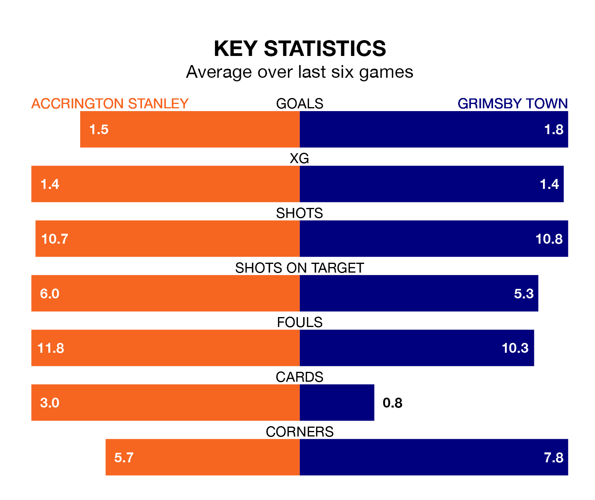

Grimsby Town come to the Wham Stadium to play Accrington Stanley on Saturday in poor form, having collected just four points from their last six games.
The visitors have won one and drawn one of their last six fixtures, while Accrington have three wins and a draw.
In the last 10 years, Accrington and Grimsby have played each other on six occasions. Accrington won three of them, Grimsby two, and they drew once.
On average, Accrington scored 1.3 goals and the Mariners 0.8 in those matches.
Their last meeting was on October 14, when Accrington won 2-0 away.
Grimsby are 20th in the table after 28 games, of which they have won six and drawn 10, earning 28 points.
Accrington are 10 places ahead of Town in 10th, with 12 wins and five draws putting them on 41 points.
With 41 goals in 28 games so far this season, the Mariners are scoring at the league's average rate with 1.5 goals per game. And they are conceding more than average, letting in 51 goals at a rate of 1.8 per game.
Stanley are also average scorers, with 1.5 goals per game. They have conceded 1.4 goals per game.
Accrington's last match was on January 27, a 1-0 win against Forest Green Rovers, with Jack Nolan getting the goal for Accrington.
Grimsby lost 2-1 against Tranmere Rovers last time out, also on January 27, with Douglas Tharme on the scoresheet.
Updated: 09:21 (UTC), 30/01/24